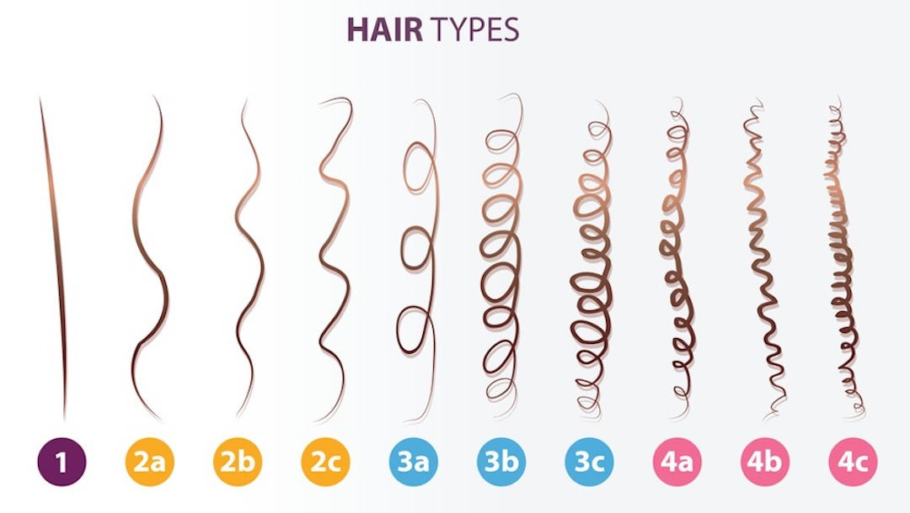
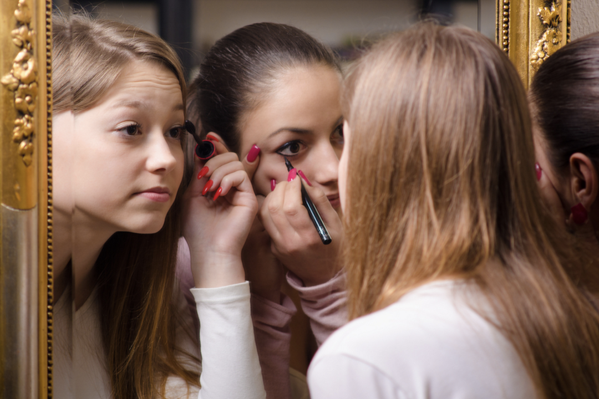

Hair & Makeup
Hair:
Brush your daughter's hair every morning before she leaves the house and every night before she goes to bed to prevent large knots and tangles.
Different textures of hair need to be taken care of differently.

Straight Hair
This is the most resiliant of all hair types. It's hard to damage and almost impossible to curl. It's the most oily hair textura of all.
Wavy Hair
This type of hair is typially more prone to frizz. Anti-frizz/humidity protective stylers are key for creating and keeping waves. The more you tousle wavy hair, the more frizz you experience.
Curly Hair
This hair type is full bodied, climate dependent (humidity = frizz), and damage prone. Lack of proper care renders dull curls. If you apply too much styling product you will get weighed down/greasy looking curls. Apply too little styling product you get Diana Ross’ 80’s afro! The key to guaranteeing effortless, frizz free curls is proper styling product application. Always start with a fresh, clean palette on day #1. Cleanse, Condition, Moisturize, then apply your styling product of choice.
Kinky Hair
This hair type is fine and fragile, and it's wiry and delicate by nature. Kinky hair is the driest hair type, thus it is more prone to breakage and requires a gentle touch. Treat this hair type like a fine silk blouse – cleanse gently, detangle softly, and avoid harsh chemicals. Because kinky hair is dry by nature, and therefore breaks easily, it needs added moisture, daily. The key to keeping these natural locks healthy, shiny, and beautiful is to moisturize every step of the way. Start with a creamy, sulfate free, moisturizing cleanser, follow suit with a super hydrating conditioner, prep with a rich moisturizer and style with a rich cream, full of natural oils and rich butters. Look for moisturizing humectants, natural conditioning agents, and exotic extracts to add moisture to these locks. Avoid mineral, and petroleum oil and heavy waxes.
Suggestions:
Start your daughter out with shorter hair when she's younger so that you can do simple hairstyles to keep it out of her face. As she gets older, let her grow it out because she will learn to do her own hair over time. This way, she can also decide what length she wants to cut it on her own. Make sure you have hair elastics and bobby pins on hand in the bathroom at all times! Here are some links for "Daddy-Do's" :
Makeup:

Anyone can wear makeup, but don't let it define her.
Makeup is a one size fits all! Anyone can wear it, not matter their shape or size. She can watch tutorials on YouTube to learn how to do basic makeup, and also learn from friends, but make sure tshe knows that it is not a necessity. She doesn’t need it to wear it to make herself “beautiful,” only wear it to enhance the beauty she already has. She shouldn’t EVER wear makeup to impress someone else, if she wants to wear it, wear it for herself! There is no need to wear a ton of makeup for school! A lot of school’s don’t have air conditioning, so a lot of the time it’s going to melt off anyways. It is also important she takes her makeup off at the end of the day before going to bed! Leaving it on isn’t good for her skin.
Suggestion for when to start wearing what makeup:
- Age 13: Mascara and lip gloss
- Age 14: Mascara, lip gloss, and concealer/BB cream/CC cream/tinted mousturizer
- Age 15: Mascara, lip gloss, concealer/BB cream/CC cream/tinted moisturizer, eyeliner in upper and lower lash-lines
- She can wear a full face of makeup for parties or events if she likes, but it's up to her and what she's comfortable with.